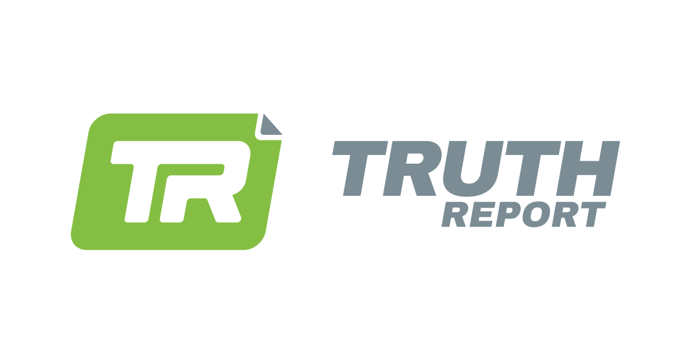

CONFIDENTIAL: This report is intended solely for named investors, shareholders, and team members of Truth Report Media (Pty) Ltd. Unauthorised distribution is strictly prohibited.

TR TRUTH REPORT
2026
1 April 2025 — 28 February 2026
Investor & Stakeholder Update Q1 2026 — End of February
We have built a highly efficient media engine and a substantial, engaged South African audience. The next chapter is converting that audience into sustainable revenue — on a platform we own.
Confidential Report — March 2026
69.8M
Total Impressions
348,449
Total Followers
R0.07
Cost Per Impression
R7.1M
Cash Position
~20 mo
Runway
1. Platform Analytics & Audience Growth
Cumulative performance since inception (1 April 2025) through 28 February 2026 across all channels.
Total Blended Impressions
since April 2025
69,819,252
↑ +84.6% Feb vs Jan
Total Company Expenses
up to end February 2026
R4,621,902
Structural burn -57.8% from peak
Blended Cost Per Impression
across all channels
R0.06
Consistent efficiency
Average Cost Per Video
produced (improving)
R5,609
↓ -5.3% vs prior period
Total Blended Interactions
since April 2025
3,999,230
↑ +61.0% Feb vs Jan
Total Followers
all platforms combined
348,449
↑ +14.7% since Oct
Blended Cost Per Interaction
across all channels
R1.16
Best-in-class efficiency
YouTube Income
cumulative to Feb 2026
R209,038
Growing month on month
Total YouTube Videos:659
Total Shorts:353(35 p/m)
Total Longform:306(30 p/m)
Audience Growth:+14.7%(303,875 → 348,449)
January & February 2026 — Month-on-Month Performance
Impressions — All Platforms
3.0M Jan
→
5.6M Feb
↑ +84.6% Month-on-Month
Interactions — All Platforms
165k Jan
→
266k Feb
↑ +61.0% Month-on-Month
Posts Published — All Platforms
414 Jan
→
656 Feb
↑ +58.1% Month-on-Month
Channel Breakdown (Cumulative Since Inception)
📘
Facebook
38,562,290
Impressions
147,000 followers
▶️
YouTube
13,016,078
Impressions
113,000 followers
📸
Instagram
6,896,016
Impressions
43,400 followers
🎵
TikTok
5,463,122
Impressions
39,500 followers
𝕏
X (Twitter)
4,471,219
Impressions
5,549 followers
Monthly Impressions by Platform (Apr 2025 – Feb 2026)
Follower Distribution by Platform
Jan vs Feb 2026 — Impressions by Platform
Top Performing Posts — January & February 2026
1
Facebook
Follow the money behind the presidency — The moment South Africa lost its last chance at real accountability
11 Feb 2026
666,918
22,884 interactions
2
Facebook
The ANC is a dead horse — South Africa's last chance at real accountability
11 Feb 2026
298,421
12,493 interactions
3
Facebook
The ultimate ANC voter test — Thirty years. Endless promises. Zero delivery.
23 Feb 2026
171,204
10,135 interactions
4
Facebook
Suing the ANC for Crimes Against Humanity — Errol Naidoo & Rob Hersov (FNC)
25 Feb 2026
130,658
11,815 interactions
5
YouTube
ROB HERSOV: South Africa's Last Exit Before Becoming Venezuela
15 Jan 2026
108,197
8,207 interactions
2. Financial Position & Runway
Based on Investec bank statements through 28 February 2026. February spend elevated by FNC event investment — a one-off strategic cost that generated ~50 content pieces.
Total Cash Position
as at 28 February 2026
R7.1M
Savings + Current accounts
Net Burn Rate
2-month average (Jan–Feb)
~R253k
Net of all income streams
Runway
at current net burn
~20 months
Zero-income scenario: 16 mo
Best Trading Month
December 2025
R105,037
Revenue trajectory positive
Runway Visualisation~20 Months Remaining
~20 months at current net burn
Based on R7.1M cash position and ~R253k average net monthly burn (Jan–Feb 2026). February spend elevated by FNC event investment — underlying structural burn continues to decrease.
Revenue by Stream
Revenue Stream
Feb 2026
Jan 2026
Dec 2025
YTD Total (Apr–Feb)
Google & YouTube Ad Revenue
R25,879
R34,430
R45,037
R209,038
Paid Promotions
R60,000
R60,000
R60,000
R420,000
Interest Income (Savings)
R32,488
R36,985
R38,075
R408,238
Total Income
R118,367
R131,415
R143,112
R1,025,785
Monthly Operating Expenditure
Category
Feb 2026
Jan 2026
Dec 2025
Nov 2025
Oct 2025
Aug 2025 (Peak)
People
R279,500
R197,100
R226,500
R326,864
R344,820
R435,950
Tools & Subscriptions
R48,729
R21,175
R20,148
R23,358
R69,826
R67,769
Operational Expenses
R43,728 (FNC event)
R52,905
R34,931
R40,180
R35,978
R138,926
Total Operating Spend
R371,957(FNC month)
R271,180
R281,579
R390,402
R450,624
R642,645
Operating spend has decreased by 57.8% from the August 2025 peak. February's elevated spend reflects the Future of Nations Conference — a fully-funded event that generated ~50 content pieces and filled the Q2 pipeline. This is a one-off strategic investment, not a structural cost increase. Underlying burn continues to trend down.
Monthly Spend vs Revenue Trend (Apr 2025 – Feb 2026)
3. Operations & Production Controls
A more focused, structured, and output-driven team operating under clear guardrails — driving higher views at lower cost.
YouTube Longform
3/day
Max per day. 1 live per week. Fixed recording cadence in place.
Shorts / Clips
5–10/day
Dedicated Clips Channel: min 20/week. Distributed across all platforms.
Filming Days
Max 2/wk
1 JHB weekly studio set. CPT: R5,000/unlimited hour negotiated.
📡
Live Broadcast Testing
SONA, Budget Speech & Helen Zille Manifesto Launch — Live Coverage Tested
Truth Report successfully tested live broadcast capabilities across three major political events: the State of the Nation Address (SONA), the National Budget Speech, and Helen Zille's Manifesto Launch. These tests validated our technical stack and team capacity for real-time political coverage — a critical capability ahead of the 2026 election cycle. The team is now actively working on streamlining and standardising this process for consistent, scalable live output.
System / Initiative
Status
Detail
Trello Workflow Management
Live — Feb 2026
Full team now operates on Trello for real-time pipeline visibility across all 21 operational sections. Tightens handoffs, deadlines, and approvals across the entire production chain.
RACI Framework (v7)
Complete
Fully updated RACI enforces strict ownership from strategy through production and final delivery. Every task has a named accountable owner.
Fixed Recording Dates
Implemented
Centralised booking system managed by Production Manager. All content submissions go through a single intake point — eliminating scheduling conflicts and last-minute changes.
Live Broadcast Capability
Streamlining
Successfully tested on SONA, Budget Speech, and Helen Zille's Manifesto Launch. Process standardisation underway for consistent, scalable live political coverage.
Zulu Language Channel
Launching
Dedicated Zulu-language channel to expand reach into a significant underserved audience segment and broaden Truth Report's national footprint.
Remote Operations
Complete
Full transition from office-based to remote model. Production output stable and growing. Burn rate significantly reduced as a direct result.
4. Team & Creator Network
A leaner, more focused core team — structured for output, accountability, and scale. Consistently expanding our creator network with new talent.
A More Focused, Output-Driven Team
Truth Report's core team has been deliberately restructured for clarity and performance. Every role has a defined owner in the RACI framework, every task flows through Trello, and every production decision sits with a named accountable person. The result: more content, better quality, lower cost per video — with a team that operates with the discipline of a media company, not a startup.
Core Operations Team
NF
Nick French
CEO & Editorial Director
Core
JW
Jo van Wyk
Growth & Systems Operator
Core
JP
JP Joubert
Production Manager
Core
JE
Joe Emilio
Content & Strategy
Core
AP
Alex Palmantouras
Post-Production Lead
Core
GM
Guan Muller
Publishing & Social
Core
SS
Sama Sambit
Operations
Core
CK
Christine
Production Support
Core
Technology Team
JG
Joshua Groombridge
Platform Developer
Tech
HV
Hercules
Backend & Infrastructure
Tech
SP
Shaun Sparg
Frontend & UX
Tech
Creator Network — Consistent & Expanding
Truth Report consistently collaborates with established creators and is actively onboarding new talent as consistent contributors. This month, we welcomed Mat Cohen and Stephan the Podcaster to the network.
RH
Rob Hersov
Anchor Creator
Creator
RG
Renaldo Gouws
Host & Interviewer
Creator
MC
Mat Cohen
New — Feb 2026
New Creator
ST
Stephan the Podcaster
New — Feb 2026
New Creator
5. Key Milestones
Major achievements during the December 2025 – February 2026 reporting period.
🎤
Flagship Event
Future of Nations Conference (FNC) — 25 February 2026
A landmark success. Fully funded with sponsorships paid. The entire Truth Report team attended and we flew in Renaldo Gouws to assist with hosting interviews. The event generated close to 50 high-quality content pieces in a single day — dramatically lowering average cost per video and filling the Q2 content pipeline. The top post from the event ("Suing the ANC") reached 666,918 impressions.
📊
Product Live
Community Polls — Live on Website & Socials
Community Polls are live on the Truth Report website and are consistently pushed to social media. This is a deliberate, strategic warm-up for the introduction of Prediction Markets — a key premium product differentiator. We are building audience habit and expectation ahead of the full launch.
💳
Platform Live
Netcash Payment Integration — Live
Netcash is fully integrated and tested. The platform now accepts user donations via a two-click experience (Apple Pay / Google Pay). This establishes the technical foundation for user wallet balances and future subscription transactions.
📡
Capability Test
Live Broadcast Testing — SONA, Budget & Manifesto Launch
Successfully tested live broadcast capabilities on three major political events: the State of the Nation Address, the National Budget Speech, and Helen Zille's Manifesto Launch. These tests validated our technical and editorial capacity for real-time political coverage ahead of 2026 elections.
🎙️
Show Launch
Truth Report Live — Weekly Anchor Show
Truth Report Live is established as the weekly anchor show on Tuesdays, focused on South African politics and current affairs. The premiere episode registered 15,000 views within the first 24 hours and generated R500 in Superchats.
🏆
Initiative Complete
Truth Podcaster Search — Completed
The Truth Podcaster Search concluded with a live finale featuring the top 10 candidates. Winners have been selected and are producing content for Truth Report — expanding our creator pipeline and content diversity.
📰
Media Coverage
MyBroadband Feature
Truth Report was featured in MyBroadband as a new online news platform competing with News24 and IOL, highlighting backing from Rob Hersov and Nick French and positioning the platform as a "well-funded, big podcaster."
📉
Financial
57.8% Reduction in Structural Monthly Burn (Jan 2026)
Operating spend reduced from R642,645 (August 2025 peak) to R271,180 in January 2026. Achieved through remote operations transition, software optimisation, and disciplined people cost management. February's higher spend is event-driven, not structural.
🎬
Q2 2026 Production
Orania Documentary — In Planning
A planned documentary production in Orania, featuring Renaldo Gouws and Sama Sambit alongside the Truth Report recording team. This represents a significant step into long-form documentary content, expanding the editorial scope of the platform into deeper investigative storytelling.
🎉
April 2026
1-Year Anniversary Celebration — In Planning
A small, intimate event planned to mark Truth Report's first year — celebrating our creators, team, and the journey from zero to nearly 70 million impressions. The event will include the handover of the YouTube 100k Silver Play Button reward, recognising the milestone achievement of the channel crossing 100,000 subscribers.
6. Product & Technology
Platform development, monetisation infrastructure, and two strategic product initiatives in active planning.
Platform Roadmap
Netcash Donations (2-click, Apple/Google Pay)
Live
Community Polls (website + social distribution)
Live
YouTube Paid Subscriptions
In Progress
Facebook Paid Subscriptions
In Progress
AI-Powered Content Summaries
Planned
Creator Donations Feature
Q2 Launch
Prediction Markets
Future
Ward-Level Election Intelligence Platform
Planning
Strategic Product Initiatives
🗺️
Planning & Scoping
Ward-Level Political Intelligence Platform
A proprietary data product aggregating IEC ward-level election results, current councillor data, geographic boundaries, and party intelligence into a single canonical lookup table covering every ward in South Africa. Currently being scoped and planned. South Africa's 2026 elections create a unique window — this will be the definitive destination for political intelligence and a significant premium revenue driver.
🏛️
Rebranding
Truth Report Foundation — Transition In Progress
The transition from Grassroots Mzansi NPC to Truth Report Foundation is in progress, with a formal launch expected in April 2026. The Foundation will serve as the social impact and public-interest arm of the Truth Report ecosystem — housing investigative storytelling, creator development training, community media, and documentary production. A dual commercial/impact structure aligned with global best practice and SDG alignment for grant and donor funding eligibility.
Why Polls → Prediction Markets matters: Community Polls are live on the website and consistently distributed to social media. This is a deliberate audience conditioning strategy — building the habit of participation and expectation before the full Prediction Markets product launches. By the time Prediction Markets go live, Truth Report will have a trained, engaged audience ready to participate. This is the premium monetisation flywheel.
7. Q2 2026 Priorities & Outlook
We have built the engine. The next chapter is monetisation, owned audience, and proprietary product.
01
Maximise FNC Content
Edit, package, and distribute the ~50 Future of Nations Conference content pieces to maximise Q2 reach, engagement, and subscriber growth across all platforms.
02
Activate Monetisation
Launch paid subscriptions on YouTube and Facebook. Activate creator donations. Grow Google/YouTube ad revenue through watch-hour and subscriber growth.
03
Election Hub & Live Coverage
Scope and begin building the Ward-Level Political Intelligence Platform. Standardise live broadcast process for consistent political event coverage ahead of 2026 elections.
04
Truth Report Foundation Launch
Complete the transition from Grassroots Mzansi NPC to Truth Report Foundation. Establish governance, funding eligibility, and the creator development training pipeline. Target: April 2026 launch. Establish governance, funding eligibility, and the creator development training pipeline.
05
SHA & Board Formation
Circulate, finalise, and sign the Shareholders' Agreement. Establish the formal board. Approve and lock the 2026 budget with investor alignment.
06
Owned Audience Growth
Accelerate web traffic and registered user growth. Pull our audience off big tech and onto a platform we own — reducing censorship risk and unlocking direct monetisation.
The Bottom Line
In our first 11 months, Truth Report has acquired 69.8 million impressions and built a following of 348,449 people at a blended cost of just R0.06 per impression. Our structural burn rate has been cut by 57.8% from peak. We have over 20 months of runway. The Future of Nations Conference proved we can generate premium content at scale — and our live broadcast tests on SONA, the Budget Speech, and Helen Zille's Manifesto Launch prove we can cover the events that matter in real time. The unit economics are working. The team is focused, structured, and output-driven. The next phase is not more content — it is better monetisation per impression, a platform our audience calls home, and a proprietary political intelligence product that no one else in South Africa has.